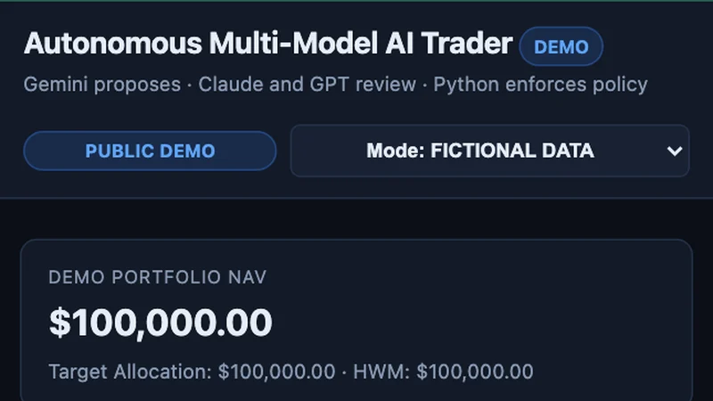
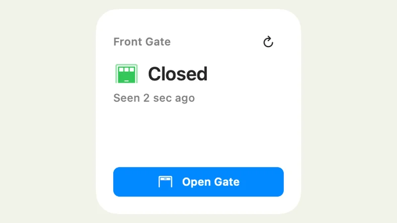

Small frustrations.
Useful software.
Mac apps, everyday tools, and experiments that turn small frustrations into useful software.


Cloud Media Shrinker
Find what’s filling iCloud Photos, then shrink big videos or clear what you don’t need. Keeps HDR.
Mac app
Beckon
Ring your Apple devices from your Mac menu bar, widgets, or a keyboard shortcut.
Mac app
Print Progress
Monitor 3D printer progress from Mac and iPhone widgets.
3D printing
AI-billboard
Turn local Markdown files into native Mac widgets for daily briefs, checklists, and small dashboards.
Mac appTagTracker
Explore local AirTag location history with maps on your Mac.
Experimental Mac app
H2D Custom Dashboard
Local status monitoring and optional exhaust control for the Bambu H2D.
3D printing
Buy or Rent
Compare the long-term numbers behind buying a home versus renting.
Web calculator
qtfaststart2
Move MP4 metadata to the front for faster streaming starts without re-encoding.
Developer tool
Netflix PiP Fixer
Keep Netflix picture-in-picture available while you browse.
Chrome extensionWritings
Building an AI Trader With Deterministic Risk Controls
I built an experimental trading system that uses one model to propose trades, two others to review them, and Python to enforce the rules between those steps.

Read article →Giving my AI agent its own Mac account for QA
How I use a second macOS account to give an AI agent its own desktop for app testing while I keep working.
 Read article →
Read article →A widget for my gate
Build notes on turning a broken 30-year-old gate into a smart gate I can open from Mac and iPhone widgets, with a camera that checks whether it's open.

Read article →